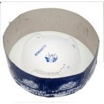

BeyStadium Attack Type (MFB)
| BeyStadium Attack Type | |
|  | |
| Number: | BB-10 |
|---|---|
| System: | Metal Fight Beyblade |
Dimensions
Diameter: 34 cm
Tornado Ridge Diameter: 25 cm
Wall Length: 15.5 cm
Exit Length: 15 cm
Depth: 3 cm
Slope: ~30°
Available Products
- BB-09 Pegasis DX Set
- BB-10 BeyStadium Attack Type
- BB-32 Hybrid Wheel Match Set
- BB-76 Galaxy Pegasis DX Set
- BB-107 Big Bang Pegasis DX Set (Black)
- Mani Ltd. Hong Kong Pegasis Leone Rev Up Launcher VS Set (Blue)
- SonoKong BeyStadium Attack Type (Red)
- SonoKong BeyStadium Attack Type (Orange)
- Various SonoKong Sets
Gallery
-
Upper view, slopes are highlighted
-
Side view, bowl depth and slope are visible
-
Tornado Ridge
Overall
The BeyStadium Attack Type is regarded as the best Metal Fight Beyblade Stadium available. It features the standard 3 Walls, 3 Exits, Tornado Ridge, and an undisturbed center. The simple design of the Attack Stadium is fantastic for enabling all Beyblade Types to perform in their intended way. Attack Types are given great slopes that assist in creating the Sliding Shoot pattern; Stamina Types are undisturbed by Stadium gimmicks; and Defense types are given a good Wall:Exit ratio that allows them to sustain a justified amount of hits. This Stadium typically comes with a set of carton shield pieces to protect Bladers from getting hurt, however this has barely occured, therefore the BeyStadium Attack Type is almost always used without them.
When compared to the Tornado Attack Stadium from the Plastic generation, the Tornado Ridge on the BeyStadium Attack Type is insubstantial because of its short height. Often times, Attack Types fail to grab the Tornado Ridge which results in a loss of speed and a slight delay. However, with consistent practice and proper technique, Attack Types stay within the Stadium without the negative effects of a shallow Tornado Ridge.
This Stadium is the primary choice for standard Metal Fight Beyblade testing and, besides the slight shallowness of its Tornado Ridge as well as the potential tendency of the Pegasis Leone Rev Up Launcher VS Set version to leave paint onto plastic Bottoms, there are no flaws that can be found for this Stadium. The Attack Type Beystadium should be every Blader's first priority.